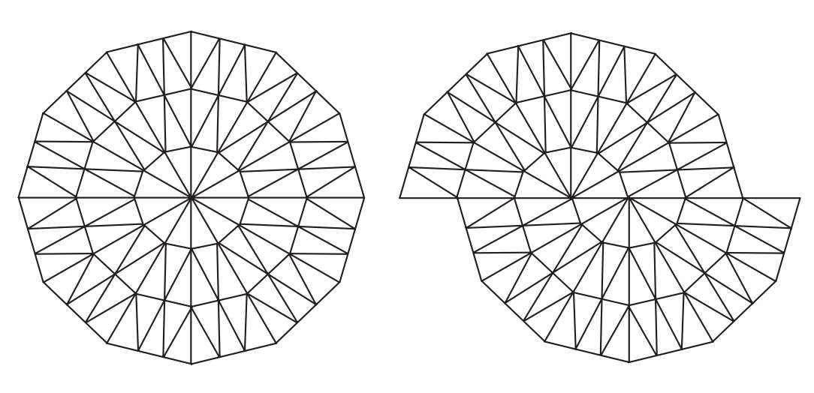
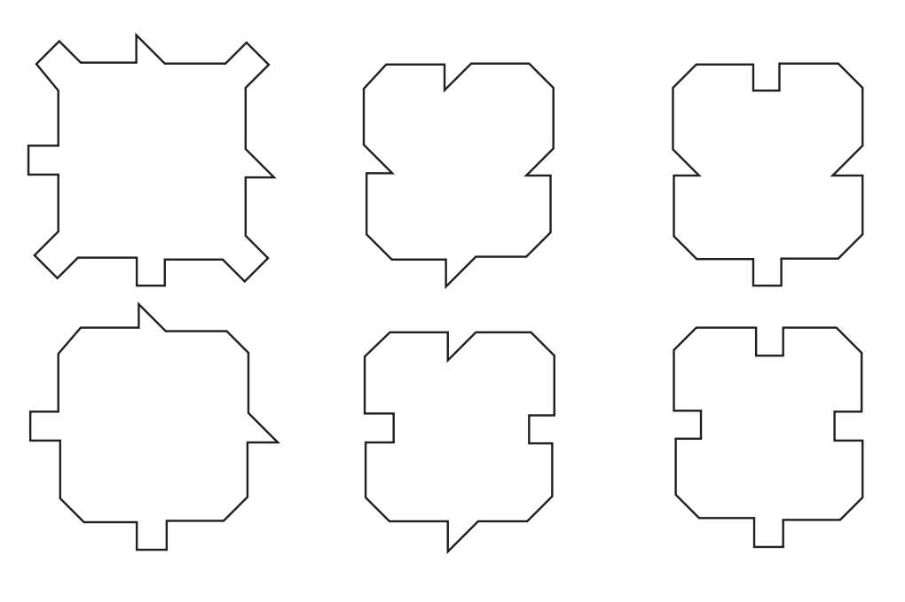
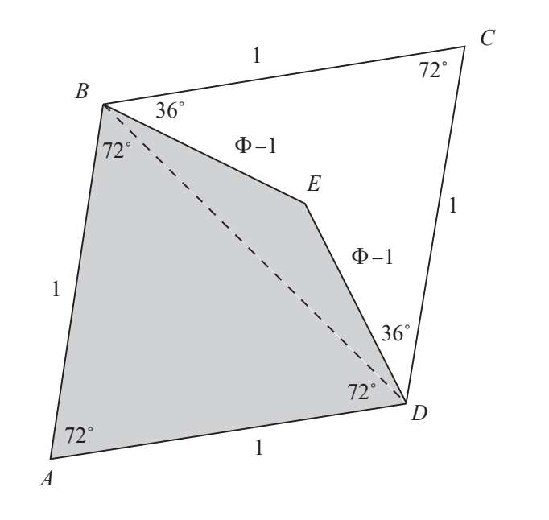
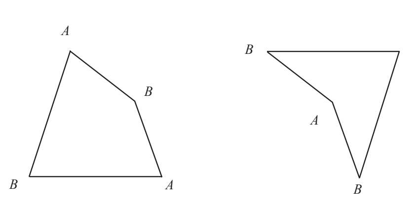
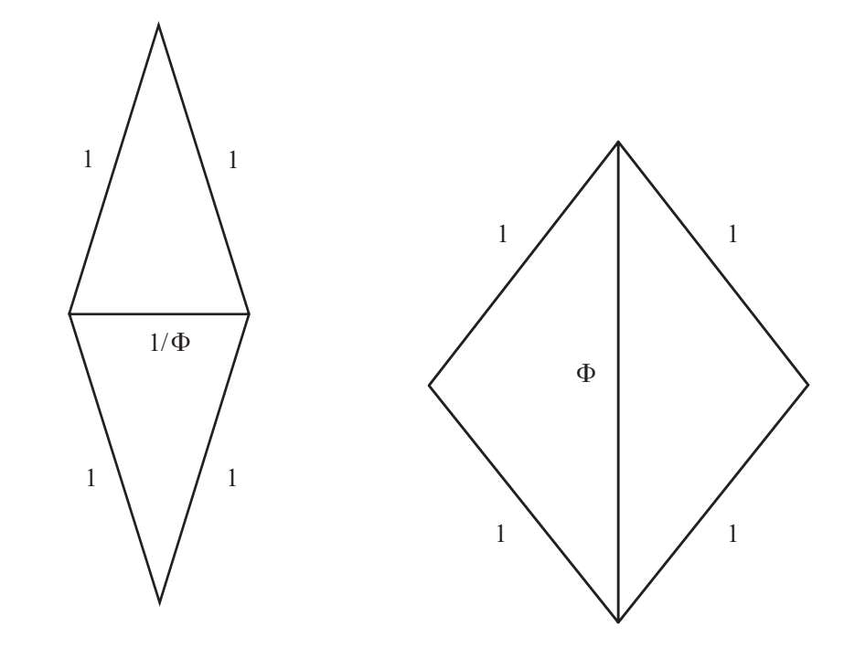

非周期性镶嵌不是通过平铺单个最小镶嵌图形来布满整个平面。即使能够进行非周期性镶嵌，这一过程也会非常复杂，至少需要用到许多不同形状的马赛克。直到20世纪70年代，它仍是一项数学难题。
非周期性镶嵌的第一种可能是将图案放射状排列。比如我们可以用单个的等腰三角形进行镶嵌。如果将下图切成两半，一半向左平移，就会形成一种非周期性镶嵌的螺线图案。

另一个挑战就是如何设计一套只用于非周期性镶嵌的图形。数学界的学者长期以来始终关注着这一问题，但他们所能找到的实例都需要大量的最小镶嵌图形。1971年，美国数学家拉斐尔·米切尔·鲁宾逊设计的一套方案只含有六种最小镶嵌图形。这些图案都是在正方形上添加凹陷或凸出的部分后产生的：

1973年，物理学家兼数学家罗杰·彭罗斯爵士将六种减少到了四种，一年后又减少到了两种。彭罗斯只用两种简单的图形就能够进行非周期性镶嵌。这两种图形被人们形象地称为“风筝和飞镖”。请参看下图，当它们组合到一起便形成了一个边长为1、两对内角为72°和108°的菱形。毫无意外，这两对角清楚地告诉了我们黄金比例就在其中。

“风筝”（阴影部分）是由两个黄金三角形沿一条公共边组成的。因此，两条长边的长度为1，而两条短边的长度为Φ-1=1/Φ。它有三个内角为72°，最大的内角为144°。“飞镖”是由两个黄金磬折形沿较短的公共边组合在一起。它是一个凹四边形，有两条边与“风筝”重合。它有两个36°和一个72°的内角，剩下的内角为216°（大于180°的平角）。
显然我们可以将这两种图形组合为一个菱形进行周期性镶嵌。如果不允许周期性镶嵌的话，还有另一种方法。我们用字母标注每个顶点并附加条件，只有标注相同字母的顶点才可以在镶嵌时重合到一起。

随着彭罗斯镶嵌的不断扩大，在每一组镶嵌的图案中，“风筝”和“飞镖”的数量之比都越来越接近黄金比例。直觉告诉我们似乎需要更多的“飞镖”而不是“风筝”，但实际上恰好相反。“风筝”的数量是“飞镖”数量的Φ倍。
彭罗斯还自创了另一套镶嵌方案，一共包含两个菱形，其中一个由两个黄金三角形组成，另一个由两个黄金磬折形组成：

要想用这一套图案进行非周期性镶嵌，我们必须以某种方式标注它们的边或顶点。在镶嵌完成的作品中，两种图形的数量比为黄金比例，其中短粗的菱形多于细长的菱形。